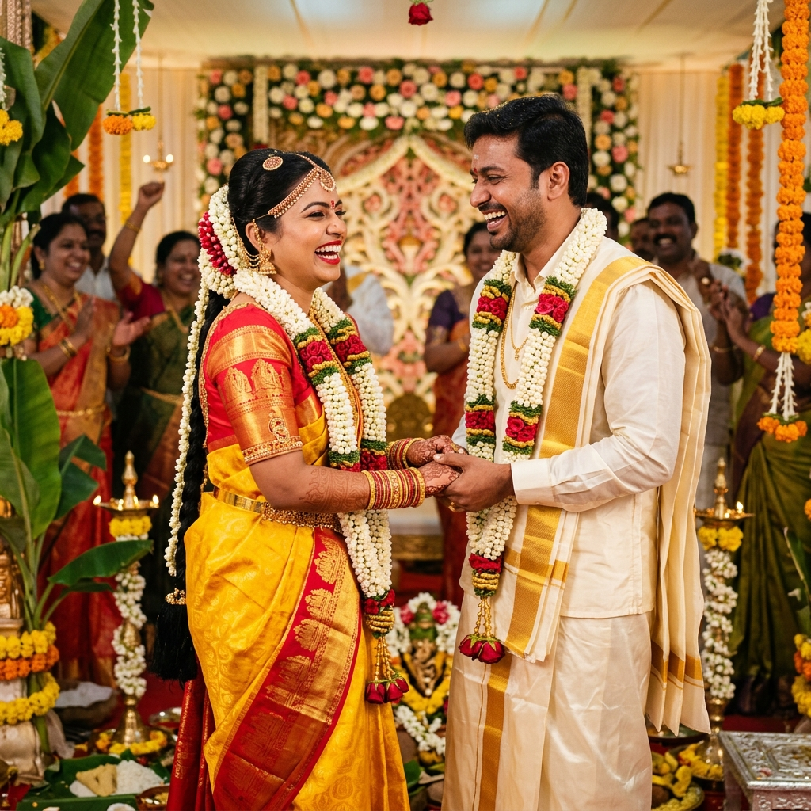

The modern South Indian workforce is global. Many young IT professionals, researchers, and corporate managers match with partners through matrimonial platforms while working in different cities, states, or even time zones. A bride might be coordinating projects in Bengaluru, while her groom is coding in Chennai or managing operations in Singapore.
While technology has made finding a partner easier, the period between the formal alliance approval and the wedding day presents a unique challenge: building a strong foundation of trust and intimacy from a distance. Without the benefit of daily physical presence, couples must learn to communicate intentionally, align their values, and handle anxieties productively.
"Geographical boundaries do not divide hearts; they merely challenge us to develop deeper listening, higher empathy, and absolute clarity in pre-marriage conversations."
The Geography of Modern Matches
For couples separated by distance, it is easy for misunderstandings to arise. Text messages lack tone of voice, and busy work schedules can lead to delayed responses. Anxiety can build when one partner is quiet during a demanding work week. Recognizing these challenges early is the first step toward overcoming them.
The solution is not more communication, but higher quality communication. Spending hours on video calls talking about weather or wedding logistics is less effective than spending 30 minutes sharing your personal values, career goals, and family expectations.
Establishing a Virtual Ritual
Building trust requires consistency. Set aside a specific time during the week for focused, distraction-free conversation. Call it your "Coffee Date." It should not be used to debate wedding guest lists or caterer details. Instead, use this time to talk about yourselves.
Share stories from your childhood, discuss a book you've read, or talk about how you manage stress. Consistent virtual rituals build emotional safety. Over time, you begin to understand your partner's emotional patterns, their sense of humor, and their core motivations.

Navigating Hard Conversations Early
It is tempting to keep conversations light and agreeable during the courtship phase. However, avoiding difficult topics can lead to surprises after marriage. Healthy pre-marriage preparation involves addressing key issues honestly:
- Financial Priorities: How do you plan to manage savings, investments, and expenses? Are there family commitments that require ongoing financial support?
- Career Ambitions: How do you balance career growth with family life? What happens if one of you receives an opportunity that requires relocation?
- Living Arrangements: Will you live independently or with extended family? How will domestic responsibilities be shared?
Approach these topics with curiosity rather than judgement. The goal is not to agree on everything, but to understand how you both handle differences and solve problems as a team.
Involving Families Without Losing Independence
In South Indian weddings, families are deeply involved. For long-distance courtships, parents may step in to fill the communication gap, coordinating dates and details. While parental support is valuable, it is crucial for the couple to maintain their own channel of communication. Ensure that major decisions about your future home, career, or lifestyle are discussed and decided between the two of you first, before presenting them to the wider family network.